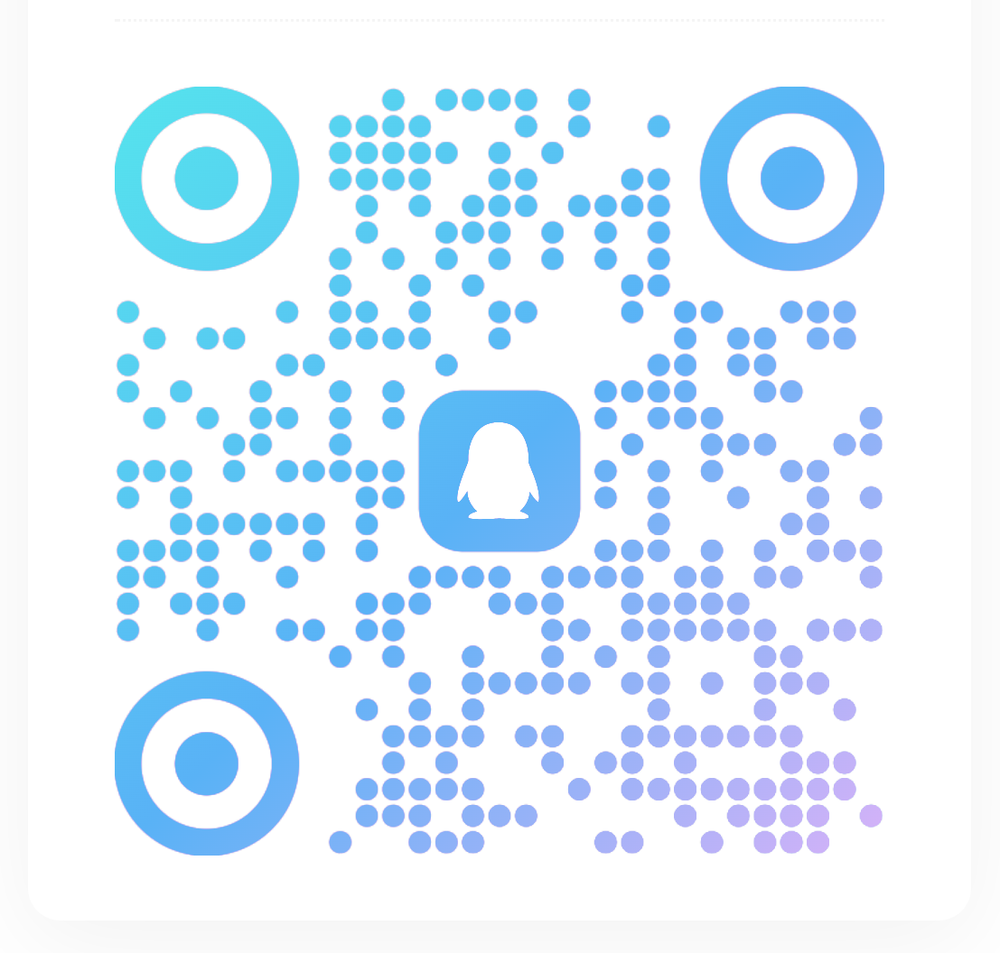

关于咏智桌面
咏智桌面工具（YZai Desk）最初为团队日常工作而开发，希望把提醒、记录与专注等常用能力放在一个容易使用的地方。软件免费开放下载，并持续进行更新维护。
安装包约 6 MB，运行时内存占用约 53 MB。实际占用会随系统环境、使用情况和统计方式变化。咏智希望成为一个轻巧、顺手的桌面伙伴。
主要功能与特点
日常工作，一处管理
今日总览、日程提醒、四象限、备忘录与剪贴板，覆盖常见的记录和规划场景。
专注与桌面挂件
用番茄时间安排工作与休息，日历、天气、备忘和专注挂件让信息随时可见。
可配置的 AI 助手
自行配置 API 接口后即可与大模型对话，支持会话记录和 Markdown 导出。对话请求会发送至所选服务商。
本地优先
日程、笔记等数据保存在本机，支持自定义数据目录与本地备份恢复，帮助保护个人隐私。
开发信息
联系与反馈
如果您在使用过程中遇到问题，或有功能建议，欢迎通过项目页面提交反馈。描述系统版本、软件版本和复现步骤，会更方便定位问题。
软件内列出的团队网站：yzai.eu.cc ↗

版权与版本
© 2026 咏智桌面工具（YZai Desk）。
当前项目说明中的安装包版本为 V0.7.0，软件处于内部测试阶段，更新方式为手动更新。具体可下载版本及更新说明，请以 GitHub Releases 为准。